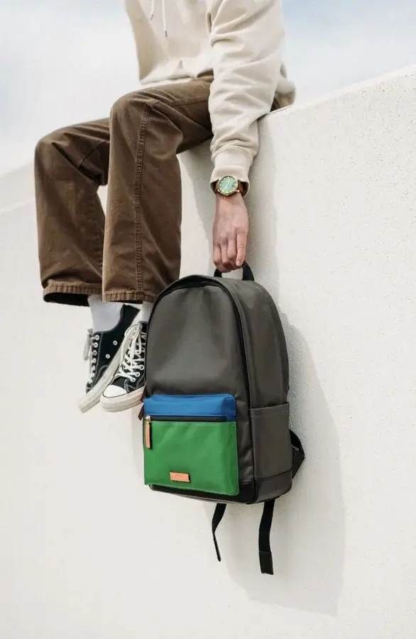

"Quanto custa?" é a primeira pergunta de quem quer produzir mochilas personalizadas — e a resposta honesta é: depende de 4 fatores. Este artigo explica cada um deles para você chegar ao orçamento sabendo exatamente o que influencia o preço.
1. O modelo e a complexidade da modelagem
Uma mochila slim de um compartimento é muito mais rápida de produzir que uma mochila executiva com bolso para notebook, compartimentos internos, alças reforçadas e detalhes em outro material. Mais painéis, bolsos e costuras = mais tempo de máquina = custo maior.
2. O tecido e os aviamentos
O material costuma responder pela maior parte do custo. Nylon 600D, poliéster, lona de algodão, cordura ou materiais impermeáveis têm preços bem diferentes — assim como zíperes (comum vs. YKK), fivelas, alças acolchoadas e forros. Detalhamos as opções no guia de tipos de tecido para mochilas.
3. O tipo de personalização
- Silk screen: melhor custo para logos de poucas cores em lotes;
- Bordado: acabamento premium e durável, custo por peça um pouco maior;
- Sublimação: estampas totais e coloridas, ideal em tecidos claros de poliéster;
- Etiquetas e tags personalizadas: complemento de marca com ótimo custo-benefício.
4. A quantidade do lote
Produção tem custo fixo de setup (modelagem, corte, preparação de máquina). Diluído em 20 peças, esse custo pesa mais por unidade; em 100 ou 300 peças, o preço unitário cai de forma relevante. Por isso a mesma mochila pode ter preços unitários bem diferentes conforme o volume.
Faixas de referência
Sem ver o projeto, qualquer número exato seria chute — mas como ordem de grandeza no atacado B2B: modelos simples (ecobags, pochetes básicas) ficam na faixa de dezenas de reais por peça, enquanto mochilas estruturadas com personalização completa podem chegar à casa de baixa centena por unidade em lotes pequenos. O orçamento real, com ficha técnica, sai rápido: enviamos proposta em minutos pelo WhatsApp.
Como economizar sem perder qualidade
- Comece com um lote de validação (20-50 peças) e escale depois;
- Simplifique a modelagem na primeira versão — menos bolsos, mesma identidade;
- Escolha a personalização certa para o seu logo (nem sempre bordado é necessário);
- Aproveite a mesma base de modelo em mais de uma cor para ganhar volume.
Veja os modelos disponíveis no nosso catálogo — qualquer um deles pode ser adaptado e produzido com a sua marca.
De que é feito o preço, na prática
Para deixar concreto, o custo de uma mochila personalizada costuma se dividir mais ou menos assim: material e aviamentos respondem pela maior fatia (tecido, zíperes, fivelas, forro e alças); em seguida vem a mão de obra de costura, que cresce com a complexidade da modelagem; depois a personalização (bordado, silk ou sublimação) e, por fim, o custo de setup diluído (modelagem, corte e preparação), que é fixo e por isso pesa muito mais em lotes pequenos.
É por isso que a mesma mochila pode custar o dobro por peça em um lote de 20 comparado a um de 200: o material quase não muda de preço unitário, mas o setup e a modelagem se diluem em muito mais peças.
Simples x estruturada: por que a diferença é grande
Uma mochila slim de um compartimento em nylon com silk de uma cor é rápida de cortar e costurar — poucos painéis, poucas costuras. Já uma mochila executiva com bolso acolchoado para notebook, múltiplos compartimentos, alças ergonômicas e detalhes em outro material exige mais modelagem, mais tempo de máquina e aviamentos melhores. Não é "cara à toa": é literalmente mais horas de trabalho e componentes mais caros por peça.
Como pedir um orçamento que volta certeiro
Quanto mais informação você manda, mais preciso (e rápido) é o retorno. O ideal é informar:
- Modelo desejado ou uma foto de referência;
- Tecido pretendido (ou peça sugestão à fábrica);
- Técnica de personalização e em quantas cores;
- Quantidade do lote inicial;
- Prazo que você precisa da entrega.
Quer uma estimativa instantânea antes de falar com a gente? Use a calculadora de orçamento e veja também como fabricamos mochilas personalizadas.
Perguntas frequentes sobre o custo
Qual o pedido mínimo para fabricar mochila personalizada?
O mínimo é de 20 unidades por modelo. Esse volume já permite produzir com a sua marca sem formar grandes estoques.
Compensa começar com lote pequeno?
Sim, para validar. O custo por peça é maior em lotes pequenos, mas você testa modelo, material e aceitação da marca antes de investir em volume. Depois escala com preço unitário menor.
O bordado encarece muito?
O bordado tem custo por peça um pouco maior que o silk, mas entrega acabamento premium e durável. Para logos de poucas cores em grande quantidade, o silk costuma ser mais econômico.
Pronto para produzir com a LS Confecções?
Fabricação B2B de bolsas, mochilas e acessórios personalizados a partir de 20 unidades, em São Paulo. Fale direto com nosso comercial e receba uma proposta em minutos.
Solicitar orçamento